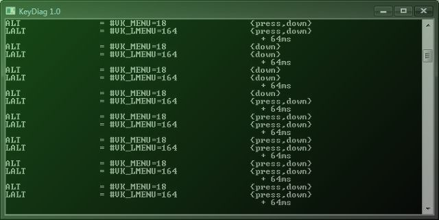

LUNA∞SOLE
Recent update: 2017/07/23
Small console program to monitor pressed keyboard keys.
Originaly made it for simple keyboard diagnostics (yea, performed after a cup of coffee spilled on a keyboard.. for example).
Also usable to get key codes/VK constants.
